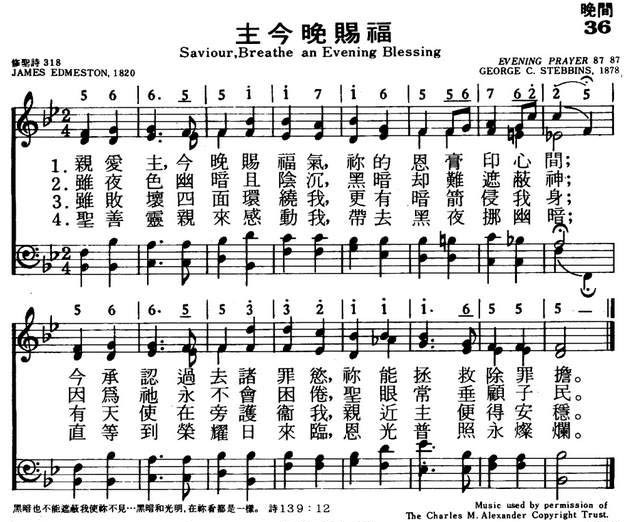

|
|
|
|
1 Savior, breathe an evening blessing 2 Though destruction walk around us, 3 Though the night be dark and dreary, 4 Should swift death this night o'ertake us, Amen. |
036主今晚赐福
1.亲爱主今晚赐福气，袮的恩膏印心间；
今承认过去诸罪欲；袮能拯救除罪担。 2.虽夜色幽暗且阴沉，黑暗却难遮蔽神； 因为祂永不会困倦，圣眼常垂顾子民。 3.虽败坏四面环绕我，更有暗箭侵我身； 有天使在旁护卫我，亲近主便得安稳。 4.圣善灵亲来感动我，带去黑夜挪幽暗； 直等到荣耀日来临，恩光普照永灿烂。 |
|
https://www.mred365.cn/szxg/7039.html
 https://hymnary.org/hymn/WASH1957/page/121
|
|
|
|
|

-

HYMN - Savior, Breathe an Evening Blessing https://www.youtube.com/watch?v=4w0b5oybwco -
https://www.youtube.com/watch?v=MX0AsBmdoP0
LX1791
Saviour, Breathe An
Evening Blessing
036主今晚赐福
颂新
| Text: | Saviour, Breathe an Evening Blessing |
| Author: | James Edmeston, 1791-1867 |
| Tune: | EVENING PRAYER |
| Composer: | George C. Stebbins, 1846-1945 |
| Short Name: | James Edmeston |
| Full Name: | Edmeston, James, 1791-1867 |
| Birth Year: | 1791 |
| Death Year: | 1867 |
Edmeston, James, born Sept. 10, 1791. His maternal grandfather was the Rev. Samuel Brewer, who for 50 years was the pastor of an Independent congregation at Stepney. Educated as an architect and surveyor, in 1816 he entered upon his profession on his own account, and continued to practice it until his death on Jan. 7, 1867. The late Sir G. Gilbert Scott was his pupil. Although an Independent by descent he joined the Established Church at a comparatively early age, and subsequently held various offices, including that of churchwarden, in the Church of St. Barnabas, Homerton. His hymns number nearly 2000. The best known are “Lead us, Heavenly Father, lead us” and "Saviour, breathe an evening blessing." Many of his hymns were written for children, and from their simplicity are admirably adapted to the purpose. For many years he contributed hymns of various degrees of merit to the Evangelical Magazine, His published works are:—
(1) The Search, and other Poems, 1817. (2) Sacred Lyrics, 1820, a volume of 31 hymns and one poem. This was followed by a second Series, 1821, with 35; and a third Series, 1822, with 27 pieces respectively. (3) The Cottage Minstrel; or, Hymns for the Assistance of Cottagers in their Domestic Worship, 1821. This was published at the suggestion of a member of the Home Missionary Society, and contains fifty hymns. (4) One Hundred Hymns for Sunday Schools, and for Particular Occasions, 1821. (5) Missionary Hymns, 1822. (6) Patmos, a Fragment, and Other Poems, 1824. (7) The Woman of Shunam, and Other Poems, 1829. (8) Fifty Original Hymns, 1833. (9) Hymns for the Chamber of Sickness, 1844. (10) Closet Hymns and Poems, 1844. (11) Infant Breathings, being Hymns for the Young, 1846. (12) Sacred Poetry, 1847.
In addition to those of his hymns which have attained to an extensive circulation, as those named above, and are annotated in this work under their respective first lines, there are also the following in common use in Great Britain and America:—
Tune Information
| Title: | EVENING PRAYER (Stebbins) |
| Composer: | George C. Stebbins |
| Meter: | 8.7.8.7 |
| Incipit: | 56655 11716 55676 |
| Key: | B♭ Major |
| Copyright: | Public Domain |

"SAVIOR, BREATHE AN EVENING
BLESSING"
"Thou shalt not be afraid for the terror by night…" (Ps. 91.5)
INTRO.:
A hymn which asks God’s blessings to be with us through the night is "Savior, Breathe An Evening Blessing" (#94 in Hymns for Worship Revised and #283 in Sacred Selections for the Church). The text was written by James Edmeston, who was born in Wapping near London, England, on Sept. 10, 1791. Although the grandson of an Independent minister, Samuel Brewer, fairly early in life he became a member of the Anglican Church and continued with that communion, in later years serving as a churchwarden. As a result of his education, he became a celebrated London architect and surveyor, a vocation which he followed from 1816 until his death, and was also a loyal supporter and frequent visitor of the London Orphan Asylum. Since he was particularly fond of children, many of his 2,000 hymns were intended for use in Sunday school.
For many years it was Edmeston’s practice to provide a hymn each week to be used at his family’s devotions every Sunday. Others of his hymns were produced for cottage prayer meetings. Reading Salte’s Travels in Abyssinia, modern day Ethiopia, he was especially impressed with the statement, "At night their short evening hymn…’Jesus, forgive us,’ stole through the camp." As a result, he set down these words. The hymn was first published in his Sacred Lyrics of 1820. Its first publication as a hymn was in the 1833 Christian Psalmody edited by Edward H. Bickersteth, father of hymnwriter Edward Henry Bickersteth (1825-1906). It has been called one of the finest evening hymns in the English language. Edmeston, whose hymns were published in a total of seven volumes, along with five other books of poetry, died at Homerton, England, on Jan. 7, 1867.
The tune (Evening Prayer) was composed by George Coles Stebbins (1846-1945). It was originally produced in 1876 as a response to be sung after prayer at the morning services of the Tremont Temple Baptist Church in Boston, MA, while he was the song director there. Two years later, while engaged in evangelistic services at Providence, RI, he discovered the appropriateness of Edmeston’s text with his tune. It was first published with these words in the 1878 Gospel Hymns No. 3 which Stebbins edited along with Ira David Sankey (1840-1908) and James McGranahan (1840-1907). In his work Story of the Gospel Hymns, Sankey later cited a report by Miss Helen Knox Strain that this hymn was sung by the Woman’s Union Missionary Society in Shanghai, China, during the Boxer Rebellion.
Among hymnbooks published by members of the Lord’s church during the twentieth century for use in churches of Christ, it appeared in the 1921 Great Songs of the Church (No. 1) and the 1937 Great Songs of the Church No. 2 both edited by E. L. Jorgenson; the 1948 Christian Hymns No. 2 and the 1966 Christian Hymns No. 3 both edited by L. O. Sanderson; the 1963 Abiding Hymns edited by Robert C. Welch; and the 1963 Christian Hymnal edited by J. Nelson Slater. Today, it may be found in the 1971 Songs of the Church, the 1990 Songs of the Church 21st C. Ed., and the 1994 Songs of Faith and Praise all edited by Alton H. Howard; the 1978/1983 Church Gospel Songs and Hymns edited by V. E. Howard; the 1986 Great Songs Revised edited by Forrest M. McCann; and the 1992 Praise for the Lord edited by John P. Wiegand; in addition to Hymns for Worship, Sacred Selections, and the 2007 Sacred Songs of the Church edited by William D. Jeffcoat.
The words of this hymn are so simple that they really need no detailed explanation.
I. Stanza 1 is a petition suitable for a bedside prayer
"Savior, breathe an evening blessing Ere repose our spirits seal;
Sin and want we come confessing: Thou canst save and Thou canst heal."
A. Before we lay ourselves down at night, we should go to God in prayer and ask
Him to bless us as His inheritance: Ps. 28.9
B. Of course, in asking God to bless us, we must be willing to confess our sins
to Him: 1 Jn. 1.9
C. Yet, we can do this with the assurance that He is both willing and able to
save and heal: 1 Tim. 2.3-4
II. Stanza 2 says that God will protect us during our sleep
"Though destruction walk around us, Though the arrows past us fly,
Angel guards from Thee surround us: We are safe if Thou art nigh."
A. We live in a world where danger and destruction walk around us like arrows:
Ps. 57.4
B. Although we may not always understand all the details, God has promised to
give His angels charge over His people: Ps. 91.9-11
C. This, of course, does not mean that bad things will never happen to God’s
people, because we know that such things do occur, but it means that whatever
does happen, those who trust the Lord can rest safe in His care: Ps. 119.117
III. Stanza 3 says that even the darkness of the night cannot hide us from the
all seeing eye of God
"Though the night be dark and dreary, Darkness cannot hide from Thee;
Thou art He who, never weary, Watchest where Thy people be."
A. Even though the night might seem dark and dreary to us, it cannot hide us
from God: Ps. 139.11-12
B. Our God is never weary: Ps. 121.1-5
C. Therefore, we can have the confidence that He will watch over and keep us:
Ps. 25.16-20
IV. Stanza 4 says that when death overtakes us we can awaken to an eternal
morning
"Should swift death this night o’ertake us, And our couch become our tomb,
May the morn in heaven awake us, Clad in bright and deathless bloom."
A. As we face the night of rest each day, so must we someday face the night of
death in our lives: Heb. 9.27
B. And the fact is that we simply do not know when our couch might become our
tomb: Jas. 4.14
C. However, even in death Christians can look forward to the joy that will come
in the morning: Ps. 30.5
V. Edward Henry Bickersteth felt that the fourth stanza was a bit too scary for
children, so in 1870, He replaced it with two other stanzas, the first to commit
our souls to the Father and the Son
"Father, to Thy holy keeping Humbly we ourselves resign;
Savior, who has slept our sleeping, Make our slumbers pure as Thine."
A. The Bible promises that whatever we commit to God, He is able to keep: 2
Tim. 1.12
B. Even Jesus, when He was crucified, committed His soul to God, and so should
we: 1 Pet. 2.23, 4.19
C. And we can know that Jesus understands all this because He Himself, while on
earth, saw the need for sleep: Matt. 8.25
VI. Bickersteth then added a concluding stanza that asks God to watch over us
during the night with a view toward the perfect day before us
"Blessed Spirit, brooding o’er us, Chase the darkness of our night,
Till the perfect day before us Breaks in everlasting light."
A. Some brethren object to addressing a song to the Holy Spirit, but since the
Bible teaches that we are to be filled with the Spirit, other brethren see no
problem in asking the Spirit in song to be with us: Eph. 5.18
B. The picture used here is that of the Spirit as He hovered or brooded over
the waters of the earth at creation until God brought forth light: Gen. 1.2-3
C. So the hymnwriter asks that God will send us visions of the everlasting
light for which we hope in order that He might give His
beloved sleep: Ps. 127.2
CONCL.:
This song gives deeper meaning to the little childhood prayer which many of us
were taught to say, originally written by Isaac Watts (1674-1748):
"Now I lay me down to sleep, I pray Thee, Lord, my soul to keep;
If I should die before I wake, I pray Thee, Lord, my soul to take."
As we pillow our heads each evening, we can consecrate ourselves and prepare
both for the morrow and for the eventuality of death by saying, "Savior, Breathe
An Evening Blessing."
https://hymnstudiesblog.wordpress.com/2008/10/22/quotsavior-breathe-an-evening-blessingquot/